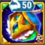
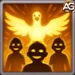
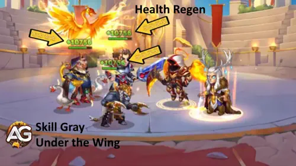
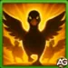
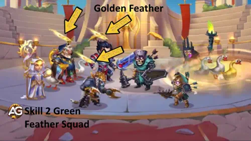
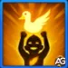
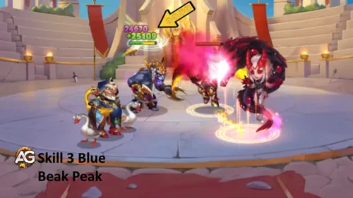
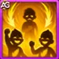
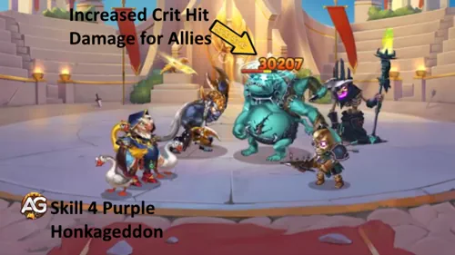

Guia do Guus – Curandeiro do Caminho da Honra em Hero Wars Alliance
- Por: Alexandre Domingos. .
Guus é um Curandeiro e Suporte do Caminho da Honra que protege seus aliados com Penas Douradas. Seu conjunto de habilidades restaura Vida, aumenta a Chance de Acerto Crítico dos aliados e pode salvar companheiros antes que fiquem abaixo de 25% de Vida.
Este guia explica a função de Guus, seu valor no meta atual, pontos fortes e fracos, talismãs, habilidades, visuais, artefatos, glifos e melhores sinergias em Hero Wars Alliance.


📋 Índice do Guia do Guus
- Quem é Guus em Hero Wars Alliance?
- Avaliação Geral do Guus no Meta
- Prós e Contras do Guus
- Comparação dos Atributos Máximos dos Talismãs
- Prioridade de Evolução das Habilidades
- Melhor Visual para Guus
- Prioridade de Evolução dos Artefatos
- Prioridade de Evolução dos Glifos
- Guia de Talismãs do Guus
- Sinergias do Guus
- Melhores Equipes para Guus
- Conclusão
Quem é Guus em Hero Wars Alliance?
Guus é um Curandeiro e Suporte da Linha do Meio pertencente ao Caminho da Honra. Ele usa Penas Douradas para restaurar Vida, aumentar a Chance de Acerto Crítico dos aliados e proteger companheiros próximos da derrota.

- Classe Principal: Curandeiro
- Posição: Linha do Meio
- Atributo Principal: Força
- Facção: Caminho da Honra
- Como obter Pedras da Alma: Eventos Especiais e Baú Heroico
- Sinergia: Caminho da Honra e equipes de acerto crítico, especialmente Artemis, Tristan, Galahad, Ishmael e Qing Mao
- Tier List da Hidra: Sem avaliação nos dados atuais do JSON
Sob a Asa oferece cura para toda a equipe e suporte de acerto crítico, enquanto Esquadrão de Penas e Pico do Bico ajudam os aliados a sobreviver à pressão contínua e a momentos perigosos com pouca Vida.
Honkageddon transforma os acertos críticos de Guus em cura em área e novas Penas Douradas. A habilidade também concede dano adicional aos Heróis da Honra com base na Vida atual deles, tornando Guus especialmente valioso em equipes coordenadas.
Prós e Contras do Guus - Hero Wars Alliance
✅ Prós
- Forte cura para toda a equipe com Sob a Asa.
- As Penas Douradas aumentam a Chance de Acerto Crítico dos aliados.
- Pico do Bico pode salvar aliados antes que fiquem abaixo de 25% de Vida.
- Honkageddon favorece equipes de crítico e Heróis da Honra.
- A maior parte da cura escala bem com Ataque Físico.
❌ Contras
- Não possui habilidade de controle de grupo.
- Seus acertos críticos curam em vez de causar dano adicional.
- Esquadrão de Penas afeta apenas aliados posicionados à frente dele.
- Pico do Bico consome a Pena Dourada depois de ativar.
- Precisa dos aliados certos para maximizar Honkageddon.
Guus - Comparação dos Atributos Máximos dos Talismãs
| Atributo |  Talismã 1: Penas |
|
|---|---|---|
 Inteligência Inteligência | 4.155 | 4.155 |
 Agilidade Agilidade | 3.729 | 3.729 |
 Força Força | 16.900 | 14.900 |
 Vida Vida | 1.144.841 | 1.064.841 |
 Ataque Físico Ataque Físico | 63.488 | 74.688 |
 Ataque Mágico Ataque Mágico | 27.571 | 27.571 |
 Armadura Armadura | 40.075,9 | 53.875,9 |
 Defesa Mágica Defesa Mágica | 25.328,8 | 25.328,8 |
 Dureza Dureza | 6.313 | 6.313 |
 Chance de Acerto Crítico Chance de Acerto Crítico | 24.100,4 | 16.510,4 |
Prioridade de Evolução das Habilidades do Guus - Hero Wars Alliance
Guus transforma Penas Douradas em cura, suporte crítico e proteção emergencial. Esta ordem mostra quais habilidades base geram mais valor em batalha.
Ordem recomendada de evolução: Sob a Asa → Honkageddon → Bicada Certeira → Esquadrão das Penas → Ataque Básico.
0 - Ataque Básico
Descrição no jogo: Causa dano físico a um único alvo.
Explicação da Habilidade: Este é o ataque comum de Guus contra um único alvo. Ele causa 100% do Ataque Físico, o que corresponde a 63.488 com o Talismã das Penas ou 74.688 com o Talismã da Grande Gema.
Fórmula com o Talismã 1: Talismã das Penas
- Fórmula 1: Dano Físico: 63.488 (100% do Ataque Físico)
Fórmula com o Talismã 2: Talismã da Grande Gema
- Fórmula 1: Dano Físico: 74.688 (100% do Ataque Físico)
Informações de Animação da Habilidade
- Recarga: 5 segundos
- Atraso da animação: 1,25 segundos
- Tipo de Dano: Dano Físico
Prioridade de Evolução: Baixa - O ataque básico acrescenta dano constante, mas não melhora a duração das Penas Douradas, a cura da equipe ou a proteção emergencial. Invista primeiro nas quatro habilidades de Guus.

1 - Sob a Asa
Descrição no jogo: Restaura Vida e concede uma Pena Dourada a cada um de seus aliados. Efeito passivo: a Pena Dourada aumenta a Chance de Acerto Crítico de um aliado por 8,0 segundos. Se uma Pena Dourada for aplicada novamente a um aliado, a duração desse efeito será estendida em 8,0 segundos.
Explicação da Habilidade: Esta é a principal cura de Guus para toda a equipe e a maneira mais fácil de colocar Penas Douradas em todos. A restauração de Vida usa 150% do Ataque Físico + 3600, alcançando 98.832 ou 115.632 de Vida. O bônus de Chance de Acerto Crítico usa 5% do Ataque Físico + 1200, concedendo 4.374,4 ou 4.934,4, dependendo do talismã equipado.
Fórmula com o Talismã 1: Talismã das Penas
- Fórmula 1: Vida Restaurada: 98.832 (150% do Ataque Físico + 3600)
- Fórmula 2: Aumento da Chance de Acerto Crítico: 4.374,4 (5% do Ataque Físico + 1200)
Fórmula com o Talismã 2: Talismã da Grande Gema
- Fórmula 1: Vida Restaurada: 115.632 (150% do Ataque Físico + 3600)
- Fórmula 2: Aumento da Chance de Acerto Crítico: 4.934,4 (5% do Ataque Físico + 1200)
Informações de Animação da Habilidade
- Palavras-chave: Bônus
- Atraso da animação: 1,25 segundos
- Duração: 8 segundos
- Alcance: 3000
- Observação: O aumento da Chance de Acerto Crítico depende dos atributos do Herói no início da batalha e não muda durante ela.

Prioridade de Evolução: Muito Alta - Maximize esta habilidade primeiro. Ela ajuda imediatamente os cinco aliados ao combinar cura confiável, aplicação de Penas Douradas em toda a equipe e suporte crítico que ativa o restante do conjunto de Guus.

2 - Esquadrão das Penas
Descrição no jogo: Concede uma Pena Dourada a cada aliado à sua frente. Enquanto um aliado possuir uma Pena Dourada, sua Vida será restaurada sempre que receber dano dos inimigos.
Explicação da Habilidade: Esquadrão das Penas protege a linha de frente de Guus por 5 segundos. Cada golpe inimigo recebido durante esse período ativa uma cura baseada em 30% do Ataque Físico + 1800, restaurando 20.846,4 ou 24.206,4 de Vida por ativação. Ataques inimigos frequentes podem transformar esse valor moderado em uma forte cura repetida.
Fórmula com o Talismã 1: Talismã das Penas
- Fórmula 1: Vida Restaurada por Golpe Inimigo: 20.846,4 (30% do Ataque Físico + 1800)
Fórmula com o Talismã 2: Talismã da Grande Gema
- Fórmula 1: Vida Restaurada por Golpe Inimigo: 24.206,4 (30% do Ataque Físico + 1800)
Informações de Animação da Habilidade
- Recarga inicial: 6 segundos
- Recarga: 15 segundos
- Palavras-chave: Bônus
- Atraso da animação: 1 segundo
- Duração: 5 segundos
- Alcance: 3000

Prioridade de Evolução: Média-Alta - A cura repetida pode ser excelente contra ataques rápidos, mas a habilidade protege apenas os aliados à frente de Guus e possui recarga de 15 segundos. Evolua depois das ferramentas para toda a equipe e de emergência.

3 - Bicada Certeira
Descrição no jogo: Se a Vida de um aliado com uma Pena Dourada estiver prestes a cair abaixo de 25%, ela será parcialmente restaurada antes que isso aconteça. A quantidade de Vida restaurada aumenta para cada segundo restante da duração da Pena Dourada. A Pena Dourada desaparece após ativar esse efeito.
Explicação da Habilidade: Pense em Bicada Certeira como um resgate emergencial. A cura base é 15% da Vida + 6000, equivalente a 177.726,15 ou 165.726,15 de Vida. Cada segundo ainda restante na Pena Dourada acrescenta 10% do Ataque Físico + 1200, ou mais 7.548,8 ou 8.668,8 de cura por segundo.
Fórmula com o Talismã 1: Talismã das Penas
- Fórmula 1: Vida Base Restaurada: 177.726,15 (15% da Vida + 6000)
- Fórmula 2: Vida Extra por Segundo Restante: 7.548,8 (10% do Ataque Físico + 1200)
Fórmula com o Talismã 2: Talismã da Grande Gema
- Fórmula 1: Vida Base Restaurada: 165.726,15 (15% da Vida + 6000)
- Fórmula 2: Vida Extra por Segundo Restante: 8.668,8 (10% do Ataque Físico + 1200)
Informações de Animação da Habilidade
- Palavras-chave: Bônus, Cura Emergencial
- Gatilho de Vida: 25%
- Alcance: 3000
- Observação: A Pena Dourada desaparece depois que a cura é ativada.

Prioridade de Evolução: Alta - Esta habilidade pode impedir uma eliminação repentina antes que aconteça. Seu valor é prático e imediato, embora exija uma Pena Dourada ativa e consuma essa Pena depois do resgate.

4 - Honkageddon
Descrição no jogo: Os acertos críticos do Herói não causam dano adicional, mas restauram Vida de todos os aliados ao redor do alvo e lhes concedem Penas Douradas. Se um aliado possuir uma Pena Dourada, todos os seus acertos críticos causarão dano aumentado, e os Heróis da Honra causarão dano adicional dependendo de sua Vida atual.
Explicação da Habilidade: Honkageddon transforma cada acerto crítico de Guus em cura em área e novas Penas Douradas. Tanto a cura quanto o aumento do dano crítico usam 80% do Ataque Físico + 6000, alcançando 56.790,4 ou 65.750,4. Os Heróis da Honra também recebem 10% de dano adicional com base na Vida atual.
Fórmula com o Talismã 1: Talismã das Penas
- Fórmula 1: Vida Restaurada no Acerto Crítico: 56.790,4 (80% do Ataque Físico + 6000)
- Fórmula 2: Aumento do Dano Crítico dos Aliados: 56.790,4 (80% do Ataque Físico + 6000)
- Fórmula 3: Dano Adicional dos Heróis da Honra: 10% com base na Vida atual
Fórmula com o Talismã 2: Talismã da Grande Gema
- Fórmula 1: Vida Restaurada no Acerto Crítico: 65.750,4 (80% do Ataque Físico + 6000)
- Fórmula 2: Aumento do Dano Crítico dos Aliados: 65.750,4 (80% do Ataque Físico + 6000)
- Fórmula 3: Dano Adicional dos Heróis da Honra: 10% com base na Vida atual
Informações de Animação da Habilidade
- Palavras-chave: Bônus
- Área: 255
- Alcance: 3000
- Gatilho: Guus realiza um acerto crítico

Prioridade de Evolução: Muito Alta - Esta passiva conecta os atributos críticos de Guus, a cura, a cobertura de Penas Douradas e a sinergia com a Honra. Maximize junto com Sob a Asa quando Guus fizer parte da sua principal equipe de acerto crítico.
Melhor Visual para Guus em Hero Wars Alliance
Descubra a melhor ordem de evolução de skins para Guus em Hero Wars Alliance para maximizar seu potencial de cura e suporte em batalha.

Skin Padrão
Força +1.365
Cada ponto de Força dá a Guus 40 de Vida e aumenta seu ataque físico, já que Força é sua estatística principal. Isso potencializa todas as suas habilidades de cura e efeitos da Pluma Dourada.
Prioridade de Evolução: Muito Alta – Esta é a skin mais importante para evoluir primeiro. Aumenta diretamente o ataque físico e a vida de Guus, fortalecendo todos os seus efeitos de cura e buffs.

Skin Anjo
Vida +108.285
Com um enorme aumento de vida, esta skin aumenta significativamente a durabilidade de Guus em todas as lutas. Mais vida permite que ele suporte mais dano e continue ajudando a equipe.
Prioridade de Evolução: Alta – Uma boa evolução após a Padrão e a Colheita. Embora não aumente diretamente o poder de cura, a sobrevivência prolongada ajuda Guus a permanecer ativo por mais tempo nas batalhas, especialmente contra equipes de dano explosivo.

Skin Elegante
Defesa Mágica +10.650
Esta skin ajuda Guus a sobreviver mais tempo contra causadores de dano mágico intenso. Maior sobrevivência significa que ele pode continuar curando e fortalecendo aliados por mais tempo.
Prioridade de Evolução: Média – Útil contra equipes com dano mágico pesado. O papel de Guus é manter os aliados vivos, então defesa mágica extra garante que ele permaneça mais tempo em campo.

Skin Cavalheiro
Resistência +2.960
Resistência reduz o dano recebido quando a vida de Guus está baixa, independentemente do tipo de dano. Ajuda a sobreviver em momentos críticos, mas só é ativada em situações de perigo extremo.
Prioridade de Evolução: Baixa – Esta é a skin menos urgente para evoluir. Embora útil em lutas perigosas, seu efeito é situacional e menos impactante comparado a aumentar a cura ou a sobrevivência regular.

Skin Misteriosa
Armadura +10.650
Esta skin aumenta significativamente a durabilidade de Guus contra dano físico pesado. A maior sobrevivência permite que ele permaneça mais tempo em batalha, curando e apoiando os aliados continuamente.
Prioridade de Evolução: Média–Alta – Uma escolha secundária forte. Como herói de suporte, Guus se beneficia muito de defesa extra, especialmente contra ameaças físicas que miram a retaguarda.

Skin Colheita
Ataque Físico +7.095
Esta skin é extremamente valiosa para Guus porque todas suas habilidades de cura e suporte escalam com o ataque físico. Quanto mais forte seu ataque, melhor sua cura e buffs críticos para os aliados.
Prioridade de Evolução: Alta – Evolua esta skin logo após a Skin Padrão. Impacta diretamente na eficiência de cura e suporte de Guus em todas as batalhas.
Skin+ Crepúsculo
Chance de Acerto Crítico +5.920
Os acertos críticos do Guus ativam Honkageddon: em vez de causarem dano crítico adicional, eles curam os aliados ao redor do alvo e concedem Penas Douradas. Este grande bônus de Chance de Acerto Crítico torna a cura mais confiável e ajuda Guus a manter as Penas Douradas ativas durante a batalha.
Prioridade de Evolução: Muito Alta – Uma das melhores evoluções do Guus para PvP. Críticos mais consistentes geram cura em área e Penas Douradas com maior frequência, melhorando a sustentação do time e habilitando o dano crítico adicional dos aliados protegidos pelas penas. Priorize-a junto das skins principais de Ataque Físico.
Prioridade de Evolução dos Artefatos do Guus – Hero Wars Alliance
Descubra quais artefatos priorizar para o Guus a fim de aumentar a cura, a sobrevivência e a sinergia crítica em toda a equipe na Hero Wars Alliance!

1º - Arma: Ganso Dourado
Este artefato aumenta a Dureza, reduzindo todos os tipos de dano recebidos por toda a equipe por 9 segundos quando a saúde estiver baixa. Essa redução de dano em equipe é crucial, pois ajuda a manter Guus, um curandeiro de linha intermediária, e seus aliados vivos, permitindo que ele forneça cura consistentemente e aplique Penas Douradas.
Prioridade de Evolução: Alta – Manter Guus vivo por mais tempo significa mais cura e mais reforços críticos para sua equipe. Isso torna a arma a prioridade máxima para sobrevivência e suporte ao time.

2º - Livro: Código do Guerreiro
Este artefato concede Chance de Acerto Crítico e Ataque Físico. Esses atributos melhoram diretamente a habilidade "Honkageddon" de Guus, permitindo que seus acertos críticos curem aliados

3º - Anel: Anel da Força
Este artefato aumenta a Força, o que eleva a vida e o ataque físico de Guus. Embora ambos sejam úteis, esse artefato tem menos impacto imediato em suas habilidades de cura em comparação com os outros.
Prioridade de Evolução: Baixa – Apesar de melhorar a sobrevivência e os atributos básicos, não aprimora diretamente as mecânicas de cura ou utilidade crítica do Guus. Evolua este por último, após garantir um impacto mais efetivo para toda a equipe com os outros artefatos.

Prioridade de Evolução dos Glifos do Guus
Aprenda o melhor caminho de evolução dos glifos do Guus em Hero Wars Alliance para melhorar sua eficácia em cura e suporte durante as batalhas.
1º - Ataque Físico:
Este é o glifo mais importante do Guus. Suas curas e efeitos da Pena Dourada escalam diretamente com o ataque físico. Melhorar este glifo aumenta bastante sua capacidade de suporte.
Prioridade de Evolução: Alta – Fortalece diretamente todas as habilidades de cura e buffs.
2º - Vida:
A cura do Guus com a Pico do Bico é baseada em uma porcentagem de sua Vida máxima. Este glifo aumenta essa cura e melhora sua resistência em batalhas longas.
Prioridade de Evolução: Média–Alta – Aumenta a sobrevivência e aprimora a cura da habilidade 3.
3º - Chance de Acerto Crítico:
Os acertos críticos do Guus ativam efeitos extras como cura e compartilhamento da Pena Dourada. Embora úteis, seu desempenho não depende totalmente de críticos, tornando este um aprimoramento secundário.
Prioridade de Evolução: Média – Adiciona valor, mas não é essencial para sua utilidade principal.
4º - Armadura:
A armadura ajuda o Guus a resistir a dano físico, especialmente se estiver na linha de frente. No entanto, como ele é principalmente um herói de suporte e costuma ficar na retaguarda, este glifo não é prioridade.
Prioridade de Evolução: Baixa – Defensivo, mas não crucial para seu papel.
5º - Força:
A força oferece um leve aumento na vida e no ataque físico, mas seu crescimento é bem menos eficiente do que os glifos diretos de Ataque Físico e Vida.
Prioridade de Evolução: Muito Baixa – Fornece estatísticas menores comparado a glifos mais impactantes.
Guia de Talismãs do Guus – Hero Wars Alliance
- Guus possui dois Talismãs, e você deve escolher qual equipar para a batalha. Diferente das skins, onde todos os bônus são aplicados independentemente de qual esteja ativa, os Talismãs concedem apenas os atributos e efeitos do que está atualmente equipado. Escolher o Talismã certo pode fazer uma grande diferença na luta.
- Os três Espaços de Re-Roll funcionam juntos como um único bônus combinado — o que mais importa é o valor total dos três re-rolls. Você pode redefinir cada espaço para maximizar a chance crítica, a armadura ou o ataque físico, dependendo do Talismã e do foco da sua build.
Talisman das Penas

Este Talismã aumenta o Dano Crítico, permitindo que Guus cause golpes críticos que ampliam sua cura através de sua habilidade passiva. Ele fortalece seu atributo de Força, melhorando tanto a vida quanto o ataque físico, que são fundamentais para suas habilidades de cura e suporte. É uma excelente escolha para builds ofensivas focadas em cura.
 Talisman das Penas |
Atributo Principal |
|---|---|
|
Força |
+2000 |
| Espaço 1 | Espaço 2 | Espaço 3 | Bônus Total de Re-Roll |
|---|---|---|---|
Chance Crítica +2200 |
Chance Crítica +2200 |
Chance Crítica +2200 |
Chance Crítica +6600 |
Talisman da Grande Gema - VIP

Este Talismã concede a Guus um aumento impressionante de Armadura e Ataque Físico, tornando-o mais resistente e fortalecendo todas as suas habilidades de cura e suporte. É perfeito para composições defensivas ou híbridas em que Guus precisa sobreviver por mais tempo enquanto mantém o sustento da equipe. O aumento no ataque físico melhora seus números de cura, já que a maioria de suas habilidades se baseia nesse atributo.
 Talisman da Grande Gema |
Atributo Principal |
|---|---|
|
Armadura |
+12000 |
| Espaço 1 | Espaço 2 | Espaço 3 | Bônus Total de Re-Roll |
|---|---|---|---|
Ataque Físico +4400 |
Ataque Físico +4400 |
Ataque Físico +4400 |
Ataque Físico +13200 |
Guus SINERGIAS - Hero Wars Alliance
SINERGIAS: Caminho da Honra
Artemis

Com sua recente reformulação, Artemis causa ainda mais dano crítico. Guus potencializa seu desempenho, e quanto maior a vida dos aliados, mais dano ela causa.
Galahad

Galahad se beneficia do vampirismo e, com a chance de acerto crítico fornecida por seu Talismã, consegue ativar os efeitos de sinergia de Guus com mais eficácia.
Ishmael

Um guerreiro com alto dano crítico e vampirismo. Guus melhora ainda mais a sobrevivência e a eficácia dos acertos críticos de Ishmael.
Qing Mao

Precisa equipar o Talismã da Perda para ganhar chance de acerto crítico, permitindo ativar a sinergia com Guus e causar dano mais confiável.
Tristan

Embora Tristan não possua atributos de acerto crítico, ele fornece forte penetração de armadura e apoia outros heróis do Caminho da Honra amplificados por Guus.
Outras Sinergias com Outras Facções
Astrid

Sinergia: Possui um talismã que concede chance de acerto crítico quando usado em batalha.
Jet

Sinergia: Concede chance de acerto crítico para todos os aliados.
Sebastian

Sinergia: Aumenta o dano de acerto crítico dos aliados.
Kayla

Sinergia: Pode usar um talismã de chance de acerto crítico para ativar sinergia com Guus.
Lara Croft

Sinergia: Causa uma grande quantidade de dano crítico.
Jhu

Sinergia: Possui naturalmente alto dano de acerto crítico.
Oya

Sinergia: Cura os aliados quando eles causam dano crítico.
Yasmine

Sinergia: Uma das maiores causadoras de dano crítico do jogo.
Ginger

Sinergia: Possui um talismã que concede chance de acerto crítico ao ser usado em batalha.
Julius

Sinergia: Fornece escudos, cura e, ao ativar seu artefato, concede chance de acerto crítico aos aliados.
Melhores Equipes para Guus em 2026 - Hero Wars: Alliance
Análise da Equipe #1:
Esta é uma das equipes atuais mais fortes para Guus. Leonel atua como destruidor da linha de frente, exercendo uma pressão excepcional contra tanques e defensores dependentes de escudos, como Julius. Guus e Byrna oferecem camadas de cura, Aidan acrescenta mais cura e escudos, enquanto Polaris fornece dano mágico e controle. A equipe suporta muita pressão e dá a Leonel o tempo necessário para destruir a linha de frente inimiga.
| Guus - Melhor Equipe de 2026 #1 | ||||
|---|---|---|---|---|
|
|
|
|
|
|
|
|
|
|
|
|
Análise da Equipe #2:
Esta formação troca a cura adicional de Byrna e a pressão de Leonel contra tanques pelo dano explosivo de Kayla e pelos resistentes escudos de Julius. Aidan oferece cura e proteção para Kayla, Guus mantém a equipe viva enquanto favorece os acertos críticos, e Polaris controla os inimigos com dano mágico. Julius protege a linha de frente, formando uma equipe equilibrada entre dano físico e mágico que é difícil de derrotar.
⭐ Veredito Final do Alexandre sobre Guus em Hero Wars Alliance
Guus é um dos suportes de sustentação mais flexíveis do meta atual porque as Penas Douradas conectam cura, pressão crítica e proteção emergencial. Ele pode apoiar heróis de dano físico e mágico, mas seu maior valor aparece em equipes que continuam atacando enquanto suas camadas de cura permanecem ativas.
Melhor escolha geral: Equipe #1 com Aidan, Polaris, Guus, Byrna e Leonel. As três camadas de suporte dão a Leonel o tempo necessário para destruir tanques, especialmente linhas de frente dependentes de escudos, como Julius. Use a Equipe #2 quando preferir o dano explosivo mais rápido de Kayla e os escudos de Julius no lugar da cura adicional de Byrna e da destruição especializada de tanques oferecida por Leonel.
Sugestões de Vídeo:
Você pode ter interesse:
 Fafnir
Fafnir Luther
Luther Tristan
TristanDeixe Sua Opinião!
Você gostou do nosso Guia do Guus para Hero Wars Mobile? Há algo que não entendeu ou gostaria de sugerir mudanças? Convidamos você a se juntar à nossa sessão de comentários na página do Alexandre Games Blog. Não hesite em expressar sua opinião, clarificar suas dúvidas e compartilhar sua sugestões.
Clique no botão abaixo para começar: